{% extends 'learn/base.html' %}
{% load i18n %}
{% block title %}{% trans "Move" %}{% endblock %}
{% block content %}
{% trans "Movement" %}
{% trans "Level 1" %}
{% trans "The most basic Move blocks you can start working with are fd , bk , rt and lt . fd and bk are used to move the turtle forward and backward (the distance is measured in pixels) while rt and lt pivot the turtle clockwise and counterclockwise respectively (the turn is measured in degrees)." %}
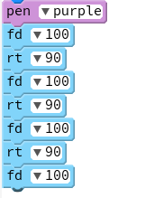
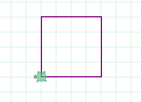
{% trans " How does this program work? Using a purple pen, the turtle will move forward 100 pixels, then, it will turn right 90 degrees, move forward 100px again, turn right 90º and so on, drawing a square as a result." %}
{% trans "Another example:" %}
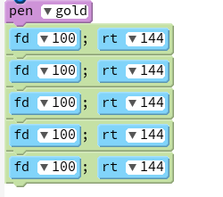
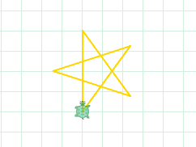
{% trans " rt and lt blocks can also be used to draw curves by using a second argument. The first argument is the angle of the curve (in dregrees) and the second one is the radius (measure in pixels). An arc can have any value as an angle, even negative values. An angle of 360 degrees creates a circle. Check out this example:" %}
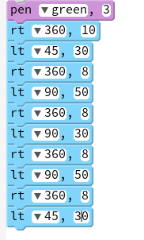
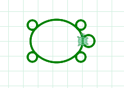
{% trans "Level 2" %}
{% trans "If you think the turtle is moving too slow and it takes its time to draw your code, don't worry! Pencil code have the perfect block for you! With speed you can speed up the movements of the turtle as fast as you want. Speed only allows one argument: number of moves per second.
speed Infinity sets the animation time to zero, which means turtle motion occurs immediately, as soon as you run it (as long as there is nothing else already ahead of it in the queue)." %}
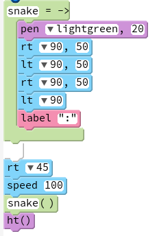
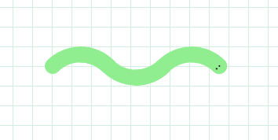
{% trans " How does this program work? When the user calls to the 'snake' function, following the blocks in order, the turtle will draw 90º arcs with 50px radius, first, turning right, then, turning left and, finally, turning right and left again. It'll also paint 2 dots (using label ) to simulate the snake's eyes. As you can see, before calling to the fuction, the turtle is turned 45º to the right and speeded up to 100 moves per sec." %}
{% trans "Level 3" %}
{% trans " jumpto moves the turtle to a new location without drawing. This block jumps to an absolute location in traditional Cartesian coordinates. jumpxy moves by an xy offset in traditional Cartesian coordinates. In this coordinate system, each unit is one pixel, and each graph paper grid square is 25 units. The mathematical coordinate axes are used, placing (0, 0) at the middle with x increasing to the right and y increasing upward." %}
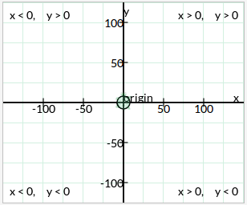
{% trans "Neither jumpto nor jumpxy will trace lines if a pen is being used, however, you can use the function moveto or movexy with a pen to draw lines between points. These blocks do not affect the turtle rotation, only its position." %}
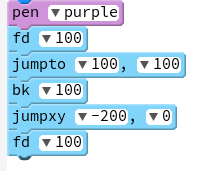
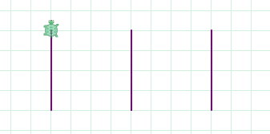
{% trans " How does this program work? A purple pen is chosen. The turtle starts in the middle of the window, at (x, y) coordinates (0, 0). With fd 100 it will go forward 100px to (0, 100), jumpto 100, 100 will move the turtle to (100, 100) without drawing, then, with bk 100 , the turtle will go backard 100px (100, 0). jumpxy -200, 0 will move the turtle, without drawing, from its current position (cpX, cpY) to (cpX -200, cpY + 0) i.e. (100 - 200, 0 + 0) = (-100, 0). Finally, the turtle will go forward 100px again (-100, 100)." %}
Click for more examples of this Category:
{% trans " Code your own programs. " %}
{% endblock %}